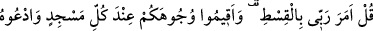
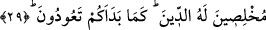
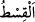

etmektedirler. Şu halde onların Allah’ın hükümlerini öğrenmelerinin hiçbir yolu yoktur.
Demek ki onların “Allah da bize böyle emretti.” sözleri, Allah’a karşı bilmediklerini
söylemekten ibâretir. Allah Teâlâ onların bu durumunu hoş karşılamamakta ve
yaptıklarını kötülemektedir.
Ayetin işârî mânâsı şöyledir: “Kötülük”, dünyayı istemek, onu sevmek ve dünya malı
toplamaya hırslı olmaktır. En büyük kötülük dünya sevgisidir. Çünkü “dünya sevgisi,
her türlü kötülüğün başıdır.”[22]
Gaflet ehli, şeytanların telkini, yönlendirmesi ve süslemesiyle dünyanın peşine
düştüklerinde, bir davetçi onları dünyayı terk edip Allah’a yönelmeye ve O’nu
arzulamaya çağırır. Buna cevaben onlar: “Babalarımızı bu yolda” yani dünyayı sever
ve şehvetlerinden istifade eder halde “bulduk. Allah da bize böyle” yani, helâl
kazanmak şartıyla dünyalık elde etmeyi “emretti.” derler. De ki: Allah kötülüğü
emretmez.” Yani, dünyayı sevmeyi ve dünyalık toplamaya karşı hırslı olmayı emretmez.
Ancak kulluk hakkını edâ etmek için bedeni örtüp ona güç kuvvet sağlayacak ve zarûrî
ihtiyaçları giderecek kadar helâl yoldan kazanmayı emreder. “Allah’a karşı
bilmediğiniz şeyler mi söylüyorsuz?” Allah’a karşı zararını ve akıbetini ve vebâlini
bilmediğiniz, aynı zamanda şeytanın fitnesinden, süslemesinden ve yoldan
çıkarmasından olduğunu farketmediğiniz şeyleri mi uyduruyor, iftira ediyorsunuz? et-
Te’vîlâtü’n-Necmiyye’de böyle denilmektedir.
Mesnevî’de şöyle denilmektedir:
Bu dünya pisliktir, murdardır
Böyle bir murdara nasıl harîs olabilirim ben?
29. De ki: Rabbim adaleti emretti. Her secde ettiğinizde yüzlerinizi O’na çevirin
ve dini yalnız Allah’a has kılarak O’na yalvarın. İlkin sizi yarattığı gibi (yine O’na)
döneceksiniz.
“De ki: Rabbim bana adaleti emretti.” Önceki ayette Allah Teâlâ yasakladığı halde
“Allah emretti.” diye kendisine nisbet edilen şeyleri reddettikten sonra bu ayette
emrettiği şeyleri beyan etmektedir.
“
” adalet demektir. Her şeyin ifrat ve tefrit tarafına varmayan orta yeri anlamına
gelir. Haberde: “İşlerin en hayırlısı, orta yollu olanıdır.”[23] buyurulmuştur.
“Bir iş yapmak istediğin zaman orta yolu tut.
Zira bir işte ifrat ve tefrite kaçmak yerilmiştir.”